Nice to meet you, I am Tsinik. I am a technology slave and a free spirit at the same time. Now what does that mean? Well simple. I studied Computer Science at the University of Cyprus and I love coding and scripting. At the same time though, I adore the outdoors and I am in love with nature.
I have passion for both of those subjects however. Actually I have passion for a lot of things. You could say I am a passionate person.
Might be the mild hyperactiveness but let's just call it passion.
Some other passions of mine are animals, martial arts, theatre, dancing, singing, giving people migrains with my singing and anything else that can get me to express myself through spending my energy.
My Skills
I want to believe that I have a lot of skills. I am a jack of all trades kinda guy. This is due to my need for learning. I want to learn everything. So I guess my best skill is learning it self. I have the ability to learn very quickly. From there on we can break my skills into categories so you don't have to search for what you need in the mess of my bragging.
Programming:
Java: The first programming language I was taught was Java. I was really impressed by it because it was the one I experimented the most. Created bots for games and other simulations to learn what I can do. More recently I have also been wokring professionaly with Java as the main language.
Javascript: My favorite of all. Easiest to use and allows you to create anything. I use it mostly for scripting. I like web crawlers and javascript allows my to achieve my most spidery form. I also use it professionally in order to creatively solve front end problems in the web.
C: Not one of my strongest language but I have taken a course in the University.
C#: This is my most professional language since this is the one I learned and used at my previous work.
.Net: At my previous job this was the framework we would so I know how to use it.
Angular: I used both AngularJS and Angular 2 in the past for professional reasons. I found that I really liked Angular 2 since it can make mobile application development a lot easier. Since then I have been using Angular 2 and Ionic for personal projects and I have been writting such projects very often.
Tapestry: Personally would not recommend it to anyone. But since I do have professional experience with this framework, I am noting it. I have worked for over a year while using this framework.
Martial Arts:
Taekwondo: One of my favorite martial arts out there and I had the joy of practicing for a few years when I was a kid.
Muay Thai: This one came around the middle to high school years of my life. More brutal but definitely more practical.
Wing Chun: Amazing art and very practical if you are a master at it. I am not. Very nice exercises and immensely beautiful art.
Kick Boxing: Done a bit at the start of my University. Unfortunately had to stop because of time management.
Judo: I always wanted to do a bit of Judo and I had the opportunity to learn as a course of the University. Great fun and exercise and I even got to twist my thumb.
MMA: After my working and uni hours settle I finally had time to start doing MMA and try to apply everything I have learnt so far.
Acting:
Stunts: Due to my martial arts background I know how to take a hit and I like having others throw me around.
Theatre: I am not a professional but I have been participating in Theatre Club of the University for 5 years.
Dancing:
Latin: Took latin lessons for a few months. Practiced batchata and salsa. Was pretty enjoyable.
Tango: I've done tango for only one semester and I can't say I remember more than just walking.
Climbing:
Nothing noticable but I did practice climbing for a semester. Was to deal with my fear of heights.
Portfolio
My portfolio might not be rich since I cannot show my professional projects due to confidentiality reasons. Unfortunately the work I show below is not very appealing but it is how I started. And you can make sure I evolve by the day. Hopefully this portfolio will be filled with awesome projects in the future.
Programming:
These were the projects when I wanted to learn something new. They might be full of spaghetti code but they carry a lot of soul with them.
Combat Bot for Runescape: This is my most favorite project of all! I started this project at the start of my university studies in order to learn how to write Java and because I was bored of playing this game and wanted to automate it.
With great success I would go to the university to be taught things I taught my self in order to code this project and came back to find my player still killing Hill Giants. Huge win for me. Now in my after university years I learned how to use APIs to create more advanced bots that use scripting. Unfortunatelly I do not have those online to present.
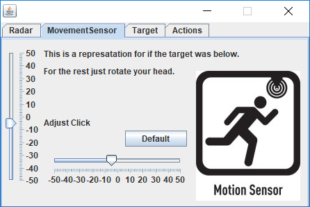
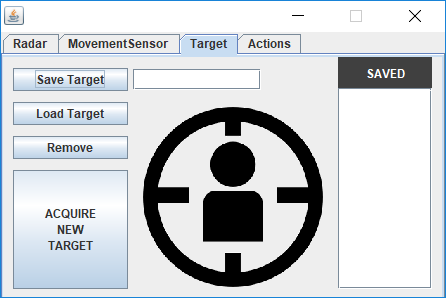
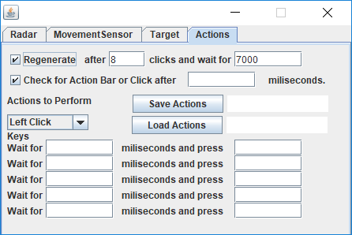
Navigate with arrow keys
Space Evaders:
Yes, you guess it. The name is stolen from the classic game of Space Invaders. I have a problem when naming things. I simply cannot.
But anyhow this was my first attempt at Cosntruct, a 2D game developer engine, and this is the result. Unfortunately my construct projects were lost and I wasn't able to completely finsih it.
Overall it was a fun project and you can actually play it here.
(WASD to move, SPACE to shoot)
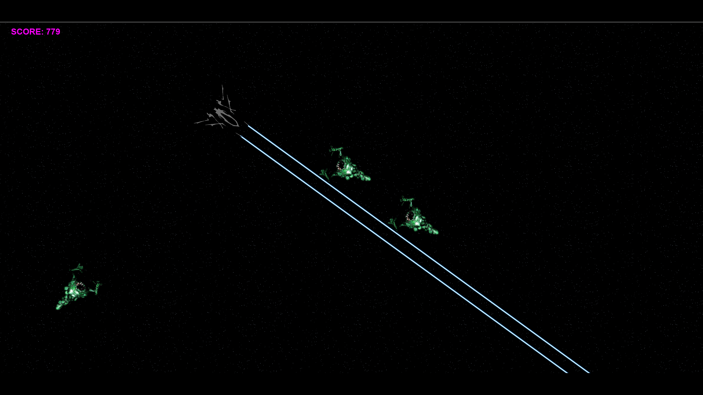
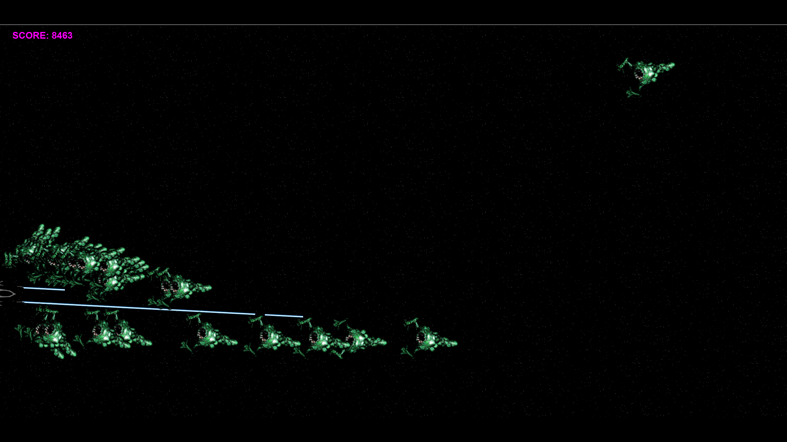
Navigate with arrow keys
Map Generator:
As a huge DnD fan I created a software which generates random masses of land. Can be used if you dont know how to draw.
Pretty easy to use, left-click to show/hide controls, right-click to save(if controls are hidden)/draw_new(if controls are shown). You can download it here.
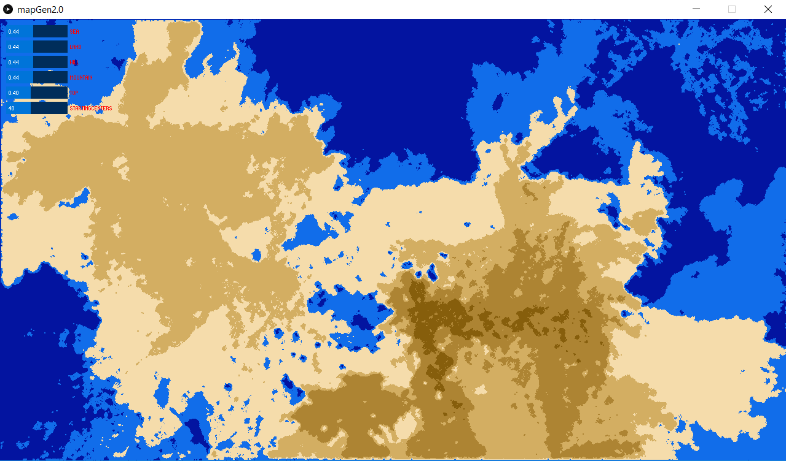
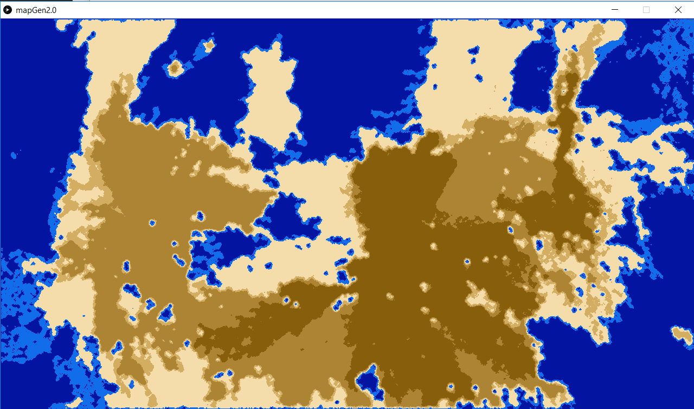
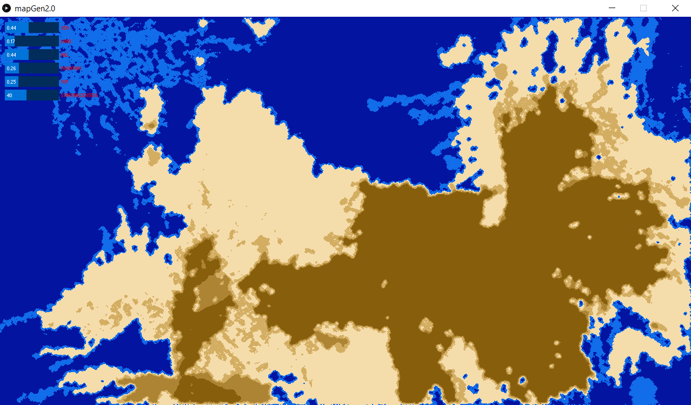
Navigate with arrow keys
Magic Football Predictions (website):
I write crawlers on a daily basis. The best victims are betting sites. I set up a server that crawls a certain site (that's a secret) and gathers information on teams and through a formula displays percentages in a readable manner. You can find it here.
The website has not data at the moment since I needed to pay for a server to have it running and this was simply a hobby.
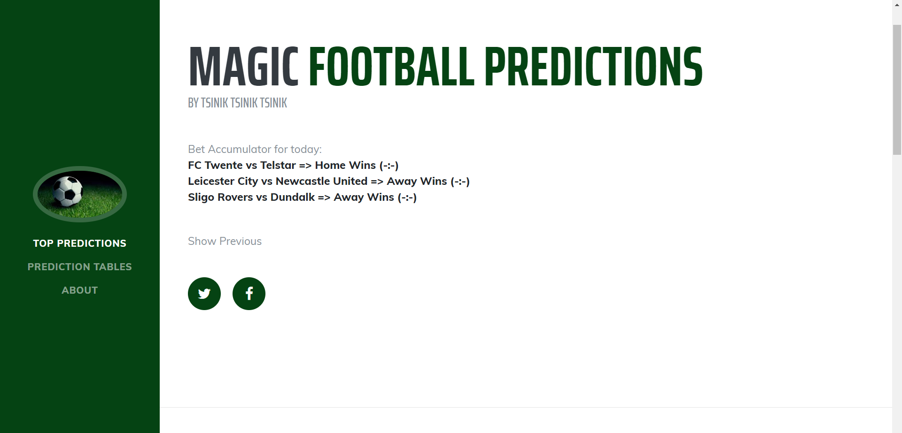
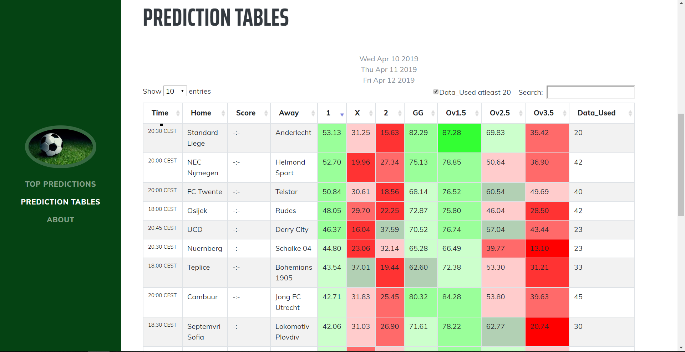
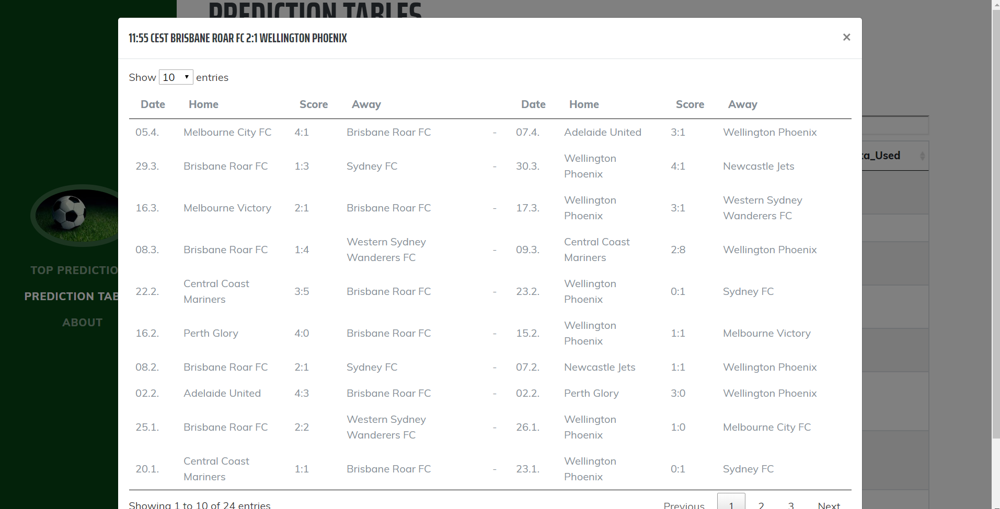
Navigate with arrow keys
Random Scripts:
One of my favorite past time activities is writting random scripts to do different everyday activities. I have a folder where I save all my scripts so there are a lot of different levels of coding since some are old, others are cleaner, some are from a point of boredom or others from a point of inspiration.
My scripts can be found here.